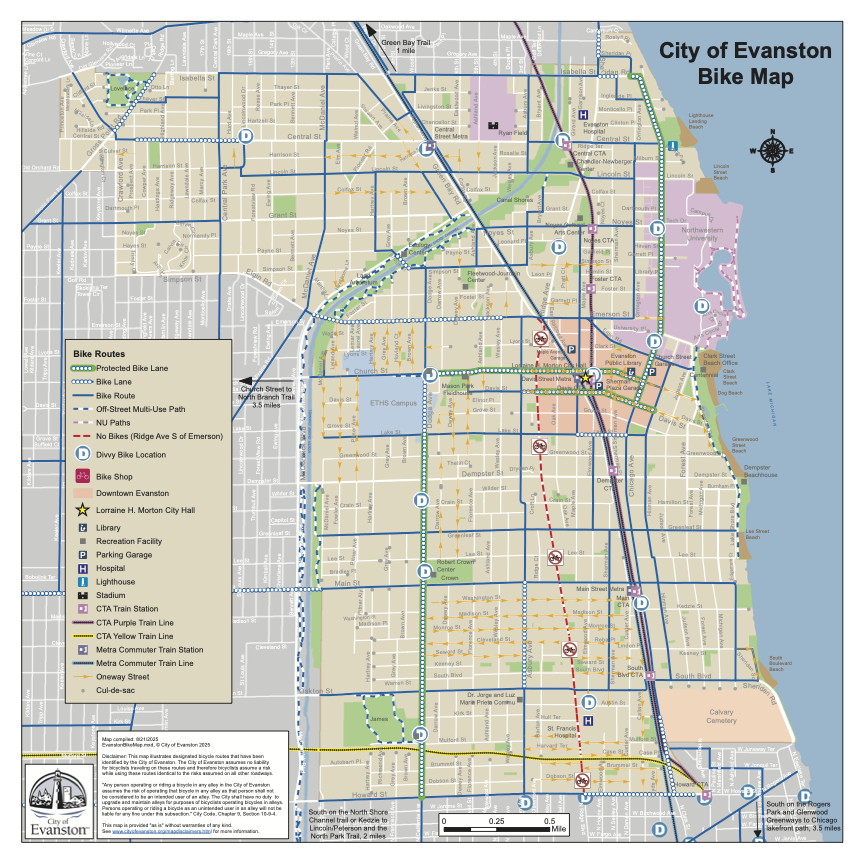

Between Evanston’s eight Chicago Transit Authority stations, three Metra stations and numerous bus stops are sidewalks and bike lanes that make the city one of high mobility.
National recognition program organization Walk Friendly Communities designated Evanston as a gold-level community in 2020. The city’s 2009 multi-modal transportation plan outlined its commitment to avid walkers and bicycle-loving residents.

After the most recent update to its Bike Plan in 2014, the city’s Public Works Department is now undertaking an upgrade to the plan, set to launch in 2026. The update aims to address gaps in current bicycle infrastructure as well as areas around Evanston with “challenging conditions,” according to the city’s website.
While there have been several updates since 2014, including adding protected bike lanes and improving bike paths, the city plans to use millions in funding from Illinois Transportation Enhancement Program and the Chicago Metropolitan Agency for Planning to improve biking conditions on Chicago Avenue and Church Street.
The Church Street Pedestrian and Bicycle Improvements project, set to begin in 2027, will add two-way bike lanes on the street from Dodge Avenue to the city’s western border as well as create a shared use trail from Church Street to Harbert Park.
The Chicago Avenue Multimodal Corridor Improvements project, slated to start in 2028, focuses on the area between Howard Street and Davis Street on Chicago Avenue, where two-way protected bike lanes will be added.
As part of its data and feedback gathering, the city held a Bike the Ridge event in September, where residents could go on a community bike ride and provide feedback on the Bike Plan Update. Then, in October, the city mobilized volunteers to stand at frequented intersections around the city to count how many bikes went by in a given timeframe.
In January and February, councilmembers also hosted joint ward meetings for residents to provide feedback on the new plan.
One area of concern for residents is Main Street, which has one east-west corridor.
“It’s an old street, and it’s not wide enough,” Evanston resident Mike Moran said at a ward meeting. “We don’t want to mow down all the trees, so that’s a problem.”
Another is on Dodge Avenue, where Evanston Township High School is located. The city last updated its bike infrastructure in the area in 2015.
“I’m a junior in high school. I take that bike lane to school every day. I’m not sure if I would bike if that wasn’t there,” ETHS student Olin Wilson-Thomas said. “In the past couple of months, I kept tally, there were 57 cars parked in that Dodge (Avenue) bike lane, illegally, no enforcement, no nothing. We need some concrete protection.”
The city also has an online portal where over 400 residents have submitted feedback on where improvements can be made. Comments associated with a specific location in Evanston fall under the following categories:
- Location Is Stressful or Uncomfortable for Biking
- Bicycling / Pedestrian Improvement Opportunity
- Safety Issue
- Positive Feedback / Works Well
- Maintenance or Operational Issue
- Bicycle Parking Needed
- Other/General Comment
In terms of next steps, the city plans to start reviewing data and community input to finalize its future course of action.
These tools were fairly intutative to use, especially because both the Knight Lab timeline tool and Flourish provide embed code for the interactives.
Since the Bike Plan is being updated for the first time since 2014, a timeline is effective in showing what the city has done since the last update was created as well as what projects they have planned. It's also engaging to audiences because it tells the story in short, accessible chunks. One addition that might be cool for future stories like this is using Google Earth to visualize where the projects took place around the city
The data viz is also helpful for the audience to understand the comment portal and residents' concerns without having to read every comment. It is clear with the number of comments for each category shown on each bar and is arranged in the same order as the list above it, making it easily understandable alongside the text of the story.
See NUSites version here.